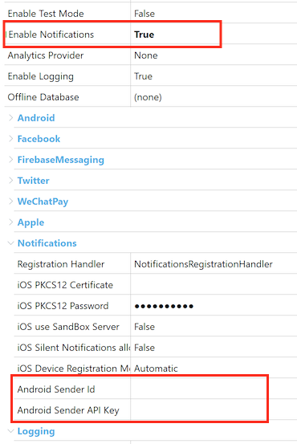
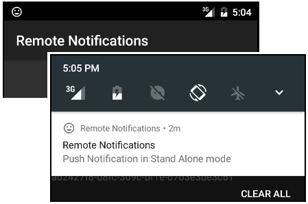

This is a step by step guide to setup push notifications for an Android Application. If you need general information on how to use push notifications please see Push Notifications in Smart Devices Application. RequirementsUsing a Google account you need to configure a Google API Project, getting a Project # (Project Number), and enable Google Cloud Messaging Service for it in order to get an API Key. See details here: Configuring Google Cloud Messaging for Android. Important Note: Up to June 26th, 2012, Google use Android C2DM Framework to manage Android push notifications service. It had been deprecated and replaced by the Google Cloud Messaging for Android (GCM). Following this, GeneXus-generated Android applications support GCM push notifications in GeneXus Evolution 2 Upgrade 2 or higher. Using previous versions, C2DM accounts can be used for push notifications, while the service is still maintained by Google. Sender configurationSince GeneXus X Evolution 3 this configuration can be done at runtime using the NotificationsConfiguration external object. Using them from GeneXus is really simple, and is done by setting to True the “Enable Notifications” property in the Main object properties group. When doing this, a new set of properties is available (under the header “Notifications”):  Here you need to set the credentials previously configured for the GCM service, Project # (as the Sender ID) and API Key (note that this must be a Server Key as stated in Configuring Google Cloud Messaging for Android, not an "Android Key"). Intermediate StepFrom now on,every time we execute a GeneXus application which has Push Notifications enabled in a Smart Device, the Devices Registration Service is executed in order to register and store the device information to be used in the future to send messages (Push Notifications) to the device. How to send notifications?Notifications are sent as shown in this Sender example: HowTo: Sending Notifications to Smart Devices Applications. Application executionAnd that’s it. The messages sent will be shown as notifications in the Android device: 
|